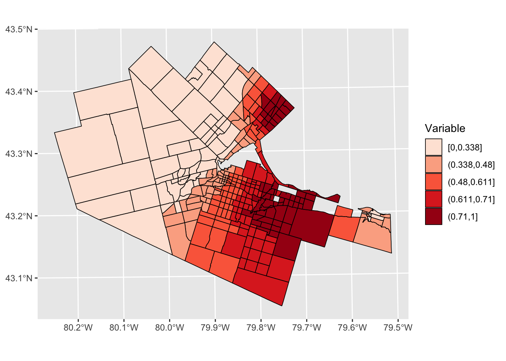
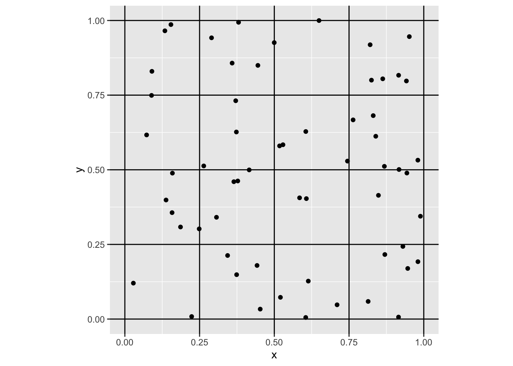
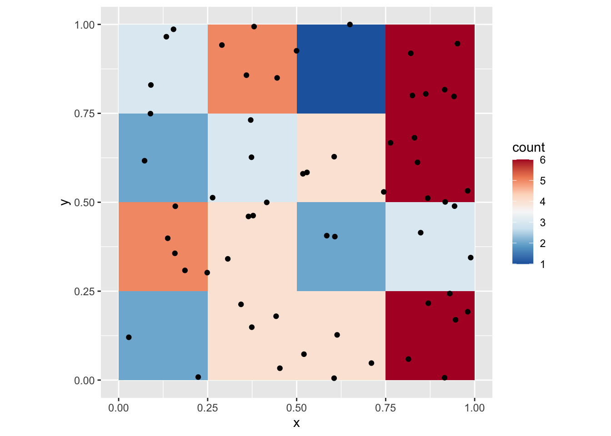
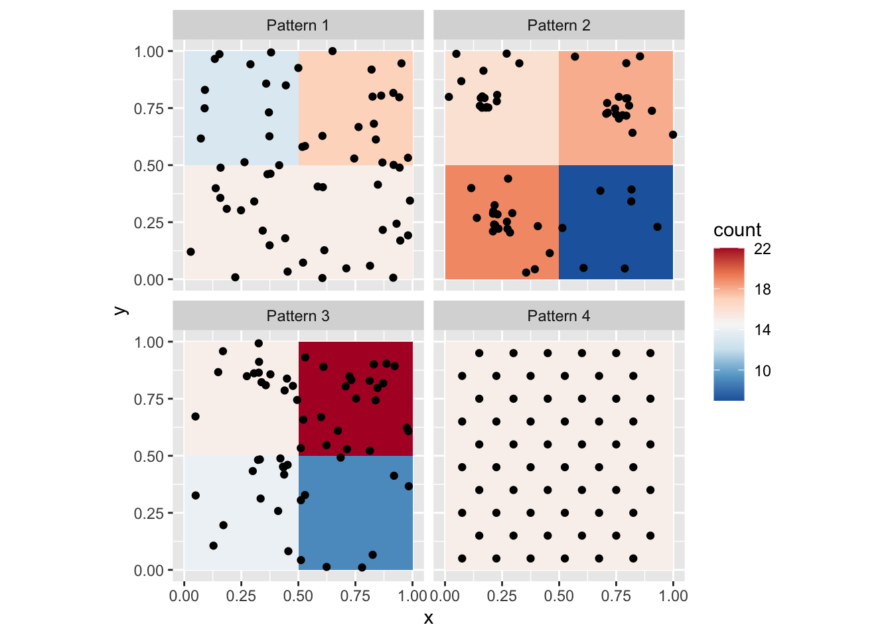
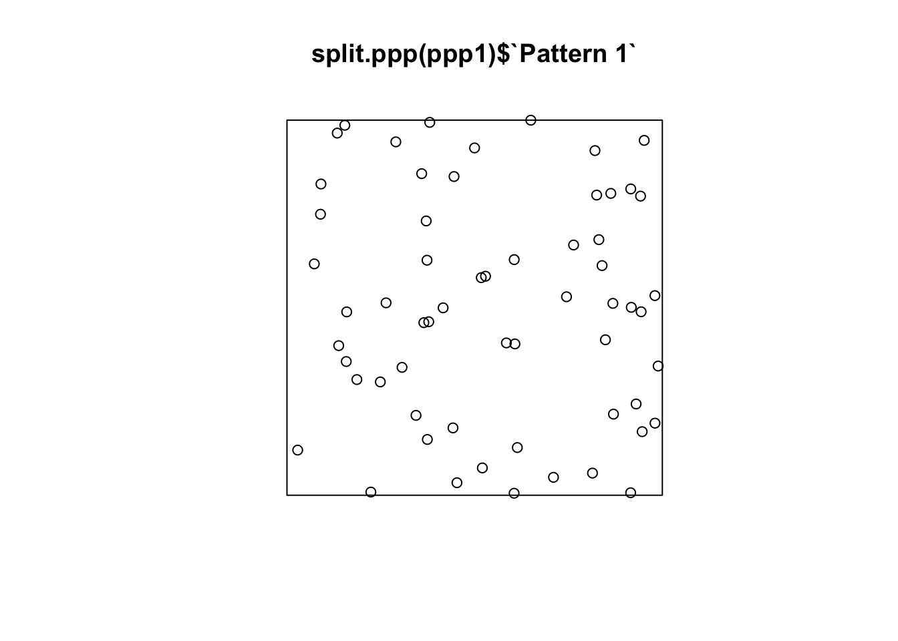

Chapter 9 Point Pattern Analysis I
NOTE: The source files for this book are available with companion package {isdas}. The source files are in Rmarkdown format and packed as templates. These files allow you execute code within the notebook, so that you can work interactively with the notes.
In last practice your learning objectives were:
- How to generate random numbers with different properties.
- About Null Landscapes.
- How to create new columns in a dataframe using a formula.
- How to simulate a spatial process.
Please review the previous practices if you need a refresher on these concepts.
9.1 Learning Objectives
In this practice, you will learn:
- A formal definition of point pattern.
- Processes and point patterns.
- The concepts of intensity and density.
- The concept of quadrats and how to create density maps.
- More ways to control the look of your plots, in particular faceting and adding lines.
9.2 Suggested Readings
- Bailey TC and Gatrell AC (1995) Interactive Spatial Data Analysis, Chapter 3. Longman: Essex.
- Baddeley A, Rubak E, Turner R (2016) Spatial Point Pattern: Methodology and Applications with R, Chapter 1, 1.1 - 1.2. CRC: Boca Raton.
- Bivand RS, Pebesma E, Gomez-Rubio V (2008) Applied Spatial Data Analysis with R, Chapter 7. Springer: New York.
- Brunsdon C and Comber L (2015) An Introduction to R for Spatial Analysis and Mapping, Chapter 6, 6.1 - 6.6. Sage: Los Angeles.
- O’Sullivan D and Unwin D (2010) Geographic Information Analysis, 2nd Edition, Chapter 5. John Wiley & Sons: New Jersey.
9.3 Preliminaries
As usual, it is good practice to clear the working space to make sure that you do not have extraneous items there when you begin your work. The command in R to clear the workspace is rm (for “remove”), followed by a list of items to be removed. To clear the workspace from all objects, do the following:
rm(list = ls())Note that ls() lists all objects currently on the workspace.
Load the libraries you will use in this activity:
library(isdas)
library(tidyverse)
library(spatstat)Load the data that you will use for this practice:
data("PointPatterns")Quickly check the contents of this dataframe:
summary(PointPatterns)## x y Pattern
## Min. :0.0169 Min. :0.005306 Pattern 1:60
## 1st Qu.:0.2731 1st Qu.:0.289020 Pattern 2:60
## Median :0.4854 Median :0.550000 Pattern 3:60
## Mean :0.5074 Mean :0.538733 Pattern 4:60
## 3rd Qu.:0.7616 3rd Qu.:0.797850
## Max. :0.9990 Max. :0.999808The dataframe contains the x and y coordinates of four different patterns of points, each with \(n=60\) events.
9.4 Point Patterns
Previously you created different types of maps and learned about different kinds of processes (i.e., random, stochastic, deterministic). A map that you have seen in several occasions is one where the coordinates of an event of interest are available. The simplest kind of data of this type is called a point pattern. This occurs when only the coordinates are available.
A point pattern is given by a set of events of interest that are observed in a region \(R\).
A region has an infinite number of points, essentially coordinates \((x_i, y_i)\) on the plane. The number of points is infinite, because there is a point defined by, say, coordinates (1,1), and also a point for coordinates (1.1,1), and for coordinates for (1.01,1), and so on. Any location that can be described by a set of coordinates contained in the region is a point.
Not all points are events, however. An event is defined as a point where something of interest happened. This could be the location where a tree exists, or a crime happened, the epicenter of an earthquake, a case of a disease was reported, and so on. There might be one such occurrence, or more. Each event is be denoted by: \[ \textbf{s}_i \] with coordinates: \[ (x_i,y_i). \] Sometimes other attributes of the events have been measured as well. For example, the event could be an address where cholera was reported (as in John Snow’s famous map). In addition to the address (which can be converted into the coordinates of the event), the number of cases could be recorded. Other examples could be the height and diameter of trees, the magnitude of an earthquake, etc.
It is important, for reasons that will be discussed later, that the point pattern is a complete enumeration. What this means is that every event that happened has been recorded! Interpretation of most analyses becomes dubious if the events are only sampled, that is, if only a few of them have been observed and recorded.
9.5 Processes and Point Patterns
Point patterns are interesting in many applications. In these applications, a key question of interest is whether the pattern is random.
Imagine a point pattern that records crimes in a region. The pattern might be random, in which case there is no way to anticipate where the next occurrence of criminal activity will be. Non-random patterns, on the other hand, are likely the outcome of some meaningful process. For instance, crimes might cluster as a consequence of some common environmental variable (e.g., concentration of wealth). On the contrary, they might repeal each other (e.g., the location of a crime draws attention of law enforcement, and therefore the next occurrence of a crime tends to happen away from it). Deciding whether the pattern is random or not is the initial step towards developing hypotheses about the underlying process.
Consider for example the following patterns. To create the following figure, you can use faceting by means of ggplot2::facet_wrap():
# This uses function "ggplot" to plot data "PointPatterns" loaded
# into the data frame earlier, by means of X and Y coordinates
# the function `facet_wrap()` is used to create multiple plots
# according to one (or more) variables in the dataset. Here, it
# is used to create individual plots for each of the four patterns
# in the dataframe, but put them all in a single figure
ggplot() +
geom_point(data = PointPatterns,
aes(x = x,
y = y)) +
facet_wrap(~ Pattern) +
coord_fixed()
As you can see, faceting is a convenient way to simultaneously plot different parts of a dataframe (in the present case, the different Pattern’s).
In the preceding activity, you were asked to generate ideas regarding possible ways of deciding whether a map of events (i.e., a point pattern) is random. In this chapter we will formalize a specific way to do so, by considering the intensity of the process.
9.6 Intensity and Density
The intensity of a spatial point process is the expected number of events per unit area. This is conventionally denoted by the Greek letter \(\lambda\).
In most cases the process is not know, so its intensity cannot be directly measured. In its place, the density of the point pattern is taken as the empirical estimate of the intensity of the underlying process. The density of the point pattern is calculated very simply as the number of events divided by the area of the region, that is: \[ \hat{\lambda} = \frac{(S \in R)}{a} = \frac{n}{a}. \] Notice the use of the “hat” symbol on top of the Greek lambda. This symbol is called “caret”. The hat notation is used to indicate an estimated value of an unobserved parameter of a process as opposed to the true (but usually unknown) value. In the present case this is the intensity of the spatial point process.
Consider one of the point patterns in your sample dataset, say “Pattern 1”. If we filter for “Pattern 1” we can then summarize it:
filter(PointPatterns, Pattern == "Pattern 1") %>% summary()## x y Pattern
## Min. :0.0285 Min. :0.005306 Pattern 1:60
## 1st Qu.:0.3344 1st Qu.:0.236509 Pattern 2: 0
## Median :0.5247 Median :0.500262 Pattern 3: 0
## Mean :0.5531 Mean :0.500248 Pattern 4: 0
## 3rd Qu.:0.8417 3rd Qu.:0.761218
## Max. :0.9888 Max. :0.999808We see that there are \(n = 60\) points in this dataset. Since the region is the unit square (check how the values of the coordinates range from approximately zero to approximately 1), the area of the region is 1. This means that for “Pattern 1”: \[ \hat{\lambda} = \frac{60}{1} = 60 \]
This is the overall density of the point pattern.
9.7 Quadrats and Density Maps
The overall density of a point process (calculated above) can be mapped by means of the geom_bin2d function of the ggplot2 package. This function divides two dimensional space into bins and reports the number of events or the density of the events in the bins. We will give this a try next:
# `geom_bin2d()` creates a tessellation and counts the number of events
# in each of the "tiles" in the tessellation. It then assigns colors based
# on the count of events. The `binwidth` determines the size of the squares
# in the tessellation, in this case squares of size 1 by 1...which corresponds
# to the size of the region!
ggplot() +
geom_bin2d(data = subset(PointPatterns,
Pattern == "Pattern 1"),
aes(x = x,
y = y),
binwidth = c(1, 1)) +
coord_fixed()
Let us see step-by-step how this plot is made.
ggplot()creates a plot object.geom_bin2dis called to plot a map of counts of events in the space defined by the bins.- The dataframe used for plotting the bins is
PointPatterns, subset so that only the points in “Pattern 1” are used. - The coordinates x and y are used to plot (in
aes(), we indicate that x in the dataframe corresponds to the x axis in the plot, and y in the dataframe corresponds to y axis in the plot) - The size of the bin is defined as 1-by-1 (
binwidth = c(1, 1)) coord_fixedis applied to ensure that the aspect ratio of the plot is one (one unit of x is the same length as one unit of y in the plot).
The map of the overall density of the process above is not terribly interesting. It only reports what we already knew, that globally the density of the point pattern is 60. It would be more interesting to see how the density varies across the region.
We do this by means of the concept of quadrats.
Imagine that instead of calculating the overall (or global) intensity of the point pattern, we subdivided the region into a set of smaller subregions. For instance, we could draw horizontal and vertical lines to create smaller squares:
# `geom_vline()` draws vertical lines that cross the x-axis at
# the points indicated; `geom_hline()` draws horizontal lines
# that cross the y-axis at the points indicated
ggplot() +
geom_vline(xintercept = seq(from = 0,
to = 1,
by = 0.25)) +
geom_hline(yintercept = seq(from = 0,
to = 1,
by = 0.25)) +
geom_point(data = filter(PointPatterns,
Pattern == "Pattern 1"),
aes(x = x,
y = y)) +
coord_fixed()
Notice how we used to create the vertical lines (geom_vline) and horizontal lines (geom_hline), from 0 to 1 every 0.25 units of distance respectively. This creates a tessellation that divides the original region into 16 smaller squares, or subregions. Each of the smaller squares used to subdivide the region is called a quadrat.
To make things more interesting, instead of calculating the overall density, we can calculate the density for each quadrat. Now the size of the quadrats will be \(0.25\times 0.25\). Here we visualize the density of the quadrats:
ggplot() +
geom_bin2d(data = filter(PointPatterns,
Pattern == "Pattern 1"),
aes(x = x,
y = y),
binwidth = c(0.25,
0.25)) +
geom_point(data = filter(PointPatterns,
Pattern == "Pattern 1"),
aes(x = x,
y = y)) +
scale_fill_distiller(palette = "RdBu") +
coord_fixed()
You can, of course, change the size of the quadrats. We can take a look at the four point patterns (by means of faceting), after creating a variable to easily control the size of the quadrat. Let us call this variable q_size:
# `q_size` controls the size of the quadrats; experiment changing this parameter
q_size <- 0.5
ggplot() +
geom_bin2d(data = PointPatterns,
aes(x = x,
y = y),
binwidth = c(q_size,
q_size)) +
geom_point(data = PointPatterns,
aes(x = x,
y = y)) +
facet_wrap(~ Pattern) +
scale_fill_distiller(palette = "RdBu") +
coord_fixed()
Notice the differences in the density maps? Try changing the size of the quadrat to 1. What happens, and why? Next, try a smaller quadrat size, say 0.25. What happens, and why? Try even smaller quadrat sizes, but greater than zero. What happens now?
The package spatstat (Baddeley, Rubak, and Turner 2016) includes numerous functions for the analysis of point patterns. A relevant function for us at this stage, is quadratcount(), which returns the number of events per quadrat.
To use this function, we need to convert the point patterns to a type of object used by spatstat denominated ppp (for plannar point pattern). This is simple, thanks to a utility function in spatstat called as.ppp. This function takes as arguments (inputs) a set of coordinates, and data to define a window. To benefit from the functionality of spatstat we will convert our data frame with spatial patterns into ppp objects.
First, define the window by means of the owin function, and using the 0 to 1 interval for our region:
# `owin()` creates a window for `ppp` objects, which becomes
# the _region_ under study. Here, we define a window that is
# the unit square and we will discuss the importance of an
#appropriate definition of the region later. The windows in
# `spatstat` need not be squares or rectangles, and can actually
# be irregular shapes
Wnd <- owin(c(0,1), c(0,1)) Now, a ppp object can be created:
# `as.ppp()` will take an object and convert it to a `ppp` object.
# Here, it does a fairly good job of guessing the contents of the
# data frame! The second argument to create the `ppp` object is a
# window, that is, an `owin` object
ppp1 <- as.ppp(PointPatterns,
Wnd)If you examine these new ppp objects, you will see that they pack the same basic information (i.e., the coordinates), but also the range of the region and so on:
summary(ppp1)## Marked planar point pattern: 240 points
## Average intensity 240 points per square unit
##
## Coordinates are given to 8 decimal places
##
## Multitype:
## frequency proportion intensity
## Pattern 1 60 0.25 60
## Pattern 2 60 0.25 60
## Pattern 3 60 0.25 60
## Pattern 4 60 0.25 60
##
## Window: rectangle = [0, 1] x [0, 1] units
## Window area = 1 square unitAs you can see, the ppp object includes the four patterns, calculates the frequency of each (the number of events), and their respective overall intensities.
Objects of the class ppp can be plotted using base R plotting functions:
plot(ppp1)
To plot each pattern separately we can split the different patterns using the function split.ppp(). Notice how $ works for indexing the patterns here, just as it does for indexing columns in a data frame:
plot(split.ppp(ppp1)$`Pattern 1`)
Once the patterns are in ppp form, quadratcount can be used to compute the counts of events. To calculate the count separately for each pattern, you need to use again split.ppp() (if you don’t index a pattern, it will apply the function to all of them). The other two arguments are the number of quadrats in the horizontal (nx) and the vertical (ny) directions:
quadratcount(split(ppp1),
nx = 4,
ny = 4)## List of spatial objects
##
## Pattern 1:
## x
## y [0,0.25) [0.25,0.5) [0.5,0.75) [0.75,1]
## [0.75,1] 3 5 1 6
## [0.5,0.75) 2 3 4 6
## [0.25,0.5) 5 4 2 3
## [0,0.25) 2 4 4 6
##
## Pattern 2:
## x
## y [0,0.25) [0.25,0.5) [0.5,0.75) [0.75,1]
## [0.75,1] 14 2 2 6
## [0.5,0.75) 0 0 4 6
## [0.25,0.5) 6 3 1 2
## [0,0.25) 4 6 2 2
##
## Pattern 3:
## x
## y [0,0.25) [0.25,0.5) [0.5,0.75) [0.75,1]
## [0.75,1] 2 11 5 7
## [0.5,0.75) 1 1 6 4
## [0.25,0.5) 1 10 3 2
## [0,0.25) 2 1 2 2
##
## Pattern 4:
## x
## y [0,0.25) [0.25,0.5) [0.5,0.75) [0.75,1]
## [0.75,1] 4 5 6 3
## [0.5,0.75) 3 3 4 2
## [0.25,0.5) 3 3 4 2
## [0,0.25) 5 4 6 3Compare the counts of the quadrats for each pattern. They should replicate what you observed in the density plots before.
9.8 Defining the Region for Analysis
It is important when conducting the type of analysis described above (and more generally any analysis with point patterns), to define a region for analysis that is consistent with the pattern of interest.
Consider for instance what would happen if the region was defined, instead of in the unit square, as a bigger region. Create a second window:
# This new window measure 3 units in the x-axis,
# and also 3 units in the y-axis (from -1 to 2)
Wnd2 <- owin(c(-1,2),
c(-1,2)) Create a second ppp object using this new window:
# Here, we use the same events as before, but place them in the larger window we just created
ppp2 <- as.ppp(PointPatterns,
Wnd2)Repeat the plot but using the new ppp object:
plot(split.ppp(ppp2)$`Pattern 1`)
Repeat but now using an even bigger region. Create a third window:
Wnd3 <- owin(c(-2, 3),
c(-2, 3)) And also a third ppp object using the third window:
ppp3 <- as.ppp(PointPatterns,
Wnd3)Now the plot looks like this:
plot(split.ppp(ppp3)$`Pattern 1`)
Which of the three regions that you saw above is more appropriate? What do you think is the effect of selecting an inappropriate region for the analysis?
This concludes this chapter. The next activity will illustrate how quadrats are a useful tool to explore the question whether a map is random.